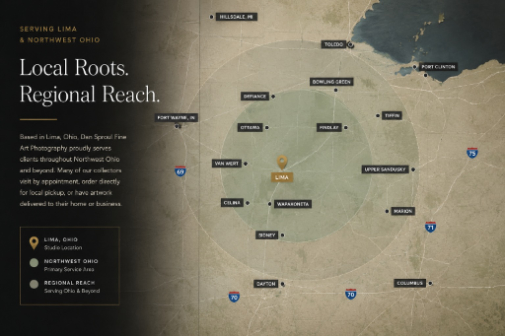

Lima Ohio wall art
Choose artwork with a local connection for living rooms, bedrooms, dining spaces, entryways, and personal rooms that should feel warm and grounded.
Fine Art Photographer in Lima, Ohio
Dan Sproul creates atmospheric fine art photography and mixed media artwork for homes, offices, healthcare spaces, hospitality interiors, wellness environments, and designer projects in Lima, Ohio and beyond.
Based In
Lima, Ohio
Artwork For
Homes, offices, healthcare, hospitality
Available As
Framed, canvas, metal, acrylic
Need Help?
Room mockups and sizing guidance
Lima Ohio Fine Art
Based in Lima, Ohio, Dan Sproul creates nature-inspired fine art photography and mixed media artwork for people who want their walls to feel more personal, calm, and connected to place.
This page brings together Ohio artwork, interior examples, local ordering options, and curated collections for living rooms, bedrooms, offices, waiting rooms, hospitality spaces, senior living communities, wellness interiors, and local businesses.
Artwork Applications
Use this page to guide local visitors into the right buying path: Ohio artwork, room-specific artwork, calming collections, or project support.
Artwork ideas for living rooms, bedrooms, offices, dining rooms, entryways, and quiet residential interiors.
Nature photography inspired by Ohio landscapes, parks, water, forests, and regional atmosphere.
Calming artwork for waiting rooms, patient-facing spaces, therapy offices, and restorative environments.
Atmospheric artwork for hotels, offices, reception areas, local businesses, and project-based interiors.
Artwork In Lima Interiors
These featured pieces were captured in Lima, Ohio parks and nearby local settings, then shown as finished artwork for homes, offices, and regional interiors. Click any room view for sizing, frame, format, and local ordering guidance.
Local note: these featured images were captured in Lima, Ohio parks and nearby local settings, making them especially relevant for Lima homes, offices, local businesses, and regional collectors.
Ohio And Beyond
Start with artwork connected to Lima and Ohio, or explore a wider body of nature photography from quiet forests, mountain light, water, coastal places, and black-and-white landscapes.
Choose artwork with a local connection for living rooms, bedrooms, dining spaces, entryways, and personal rooms that should feel warm and grounded.
Ohio parks, wildlife, farms, forests, and heritage-inspired pieces can give a home or business a stronger sense of place without feeling overly themed.
Find pieces suited for homes, offices, healthcare spaces, hospitality interiors, senior living communities, and local businesses.
Why Nature Artwork Works
This section gives the page educational value instead of making it only a local keyword page.
Nature photography can soften a room, add depth, and create visual breathing space without overwhelming the interior.
Ohio and regional artwork can help homes, offices, and public spaces feel more grounded and personal.
Artwork can be ordered as framed prints, canvas, metal, acrylic, and other formats depending on the room and wall size.
Local Ordering
If you live nearby, you can contact me directly before ordering. This is often the easiest way to get personal sizing help, compare formats, and discuss options that may avoid some marketplace costs on eligible orders.
Order Direct From Dan
For Lima and Northwest Ohio buyers, direct ordering is available for many prints and projects. Rather than guessing on size or finish, you can send a wall photo, room dimensions, or a few interior photos and I’ll help narrow the best artwork, scale, and presentation.
Direct local ordering can also make sense for larger pieces, local pickup, delivery discussions, business interiors, and buyers who want guidance before choosing framed prints, canvas, acrylic, or metal.
Ask About Local OrderingServing Lima & Northwest Ohio
Based in Lima, Ohio, I work with homeowners, businesses, healthcare facilities, hospitality projects, and interior designers throughout Northwest Ohio and beyond.
Local Print Support
If you're local, you can often order directly from me for personalized recommendations, local pickup on eligible orders, and guidance choosing the right size and finish for your space.
That can be especially helpful for larger pieces, offices, business interiors, healthcare spaces, hospitality rooms, and homeowners who want to make sure the artwork fits the room before ordering.

Frequently Asked Questions
Yes. Dan Sproul is based in Lima, Ohio and creates fine art nature photography and mixed media artwork for homes, businesses, healthcare spaces, hospitality interiors, and designer projects.
Artwork is organized on dsproul.com and many purchases are fulfilled through Dan's print shop at dansproul.com. Local Lima and Northwest Ohio buyers can also contact Dan directly for sizing guidance, local ordering options, and quote help before purchasing.
Yes. The Ohio Nature Photography page features artwork inspired by Ohio landscapes, parks, water, forests, and regional atmosphere.
Yes. Send a room photo, wall dimensions, or project direction to request artwork recommendations, sizing guidance, or a simple mockup direction.
Contact / Shop Prints
Send a room photo, project direction, or wall size. Dan can help narrow the collection, format, and scale before you order.